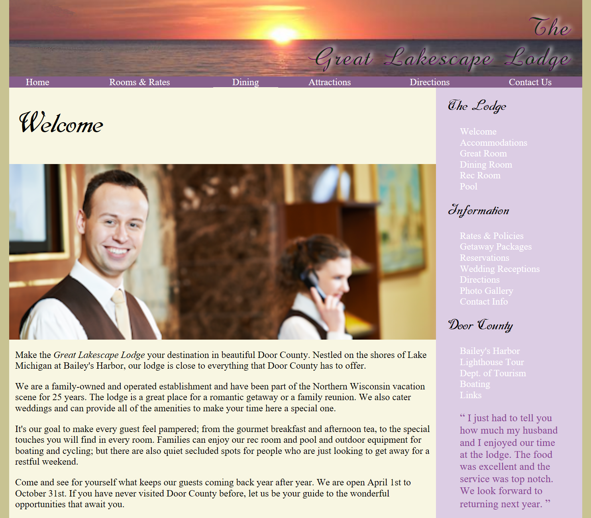
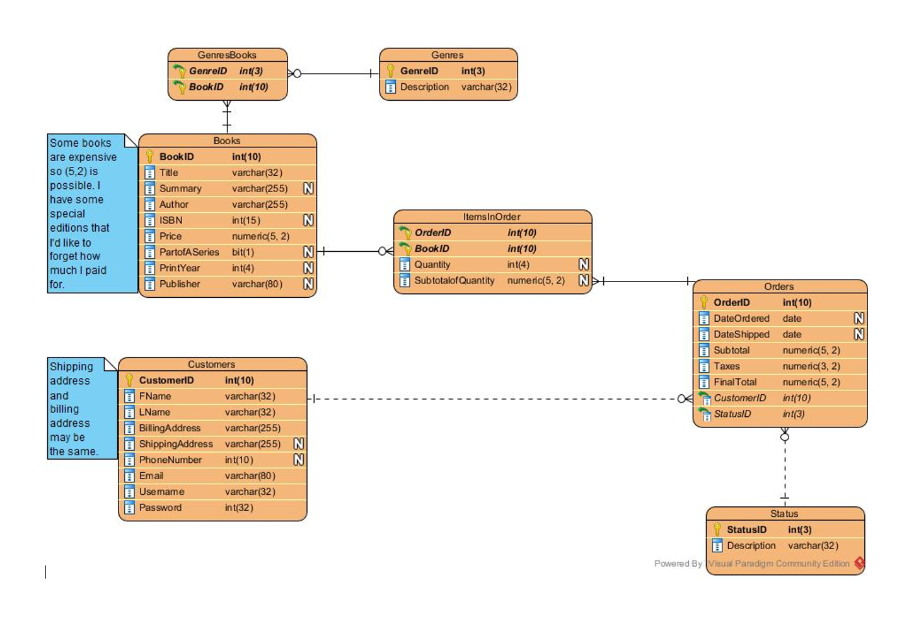
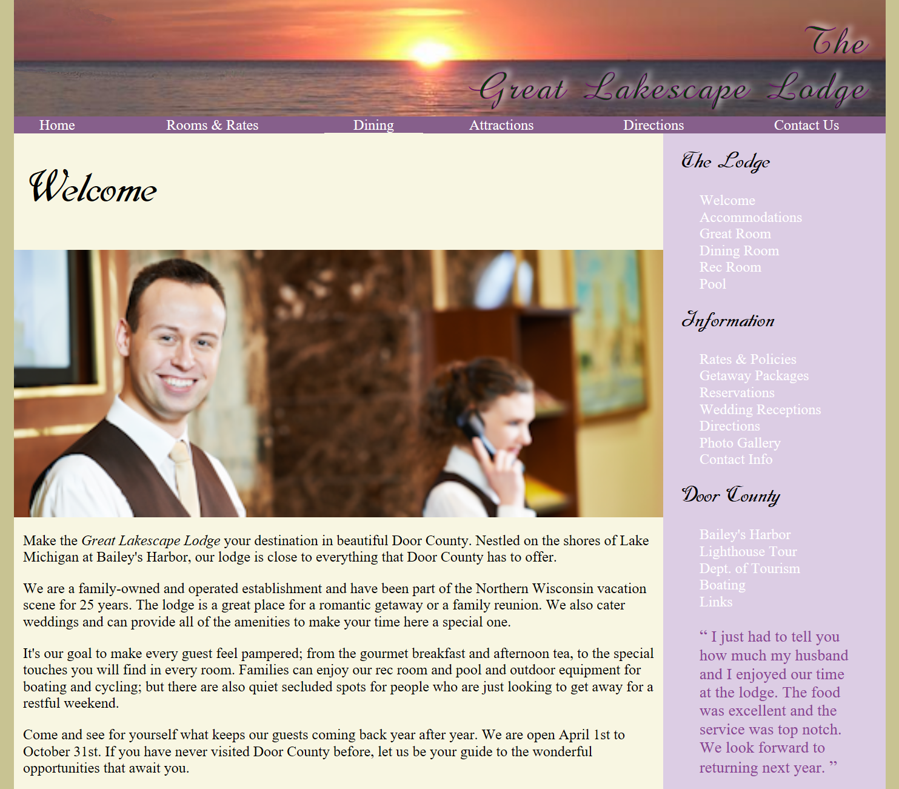
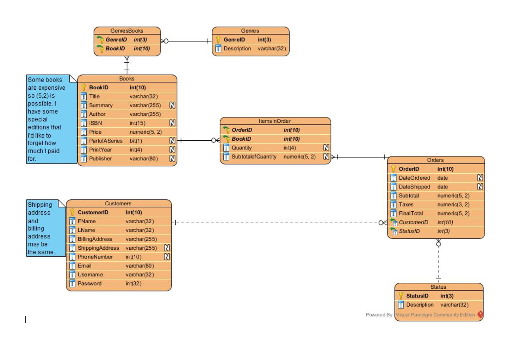

Alysha Rogers
9 Valerie Court, Windsor Junction, N.S., B2T 1Y7 · 902-240-0537 ·
alr@live.ca
I am an IT Student at Nova Scotia Community College. This web page is my portfolio for the IT Data
Analytics Program.
I don't like getting my picture taken. To your right you may enjoy a picture of my dog Toto.
Experience
Client Service Analyst (Work Placement)
Jazz Aviation (Chorus Corporation)
- Set up and support end user PC workstations (laptops, tablets, printers, smartphones, etc)
- Migration of data and new PC setup within Microsoft OS environment
- Coordinate and complete incident, Service, and Change requests
- Ensure support documentation is up to date for all Client Support related articles\\\
May 1st 2019 - July 2019
Sales Floor Associate
Walmart Bedford/Sackville
- Ensure recovered items are organized and placed in their respective positions
- Complete all tasks for the workday
- Ensure store remains clean and organized
July 2018 - Present
Executive Head Pastry Chef
The Middle Spoon Deserterie & Bar
- Responsible for the single-handed operations of a restaurant kitchen that provided for two seperate restaurants
- Organized and produced specialty orders/catering
September 2017 - May 2018
Interim Head Pastry Chef
The Middle Spoon Deserterie & Bar
- Replaced the head chef for a temporary period
- Ensured the food standards remianed the same
- Won "Best Desserts (Gold)" in the Coast's Annual "Best of Halifax" awards
August 2015 - October 2015
Education
Nova Scotia Community College
IT Data Analytics
September 2018 - June 2020
Nova Scotia Community College
Boulanger / Baking and Pastry Arts
September 2015 - June 2017
Skills
Programming Languages & Tools
- Python
- Java
- JavaScript (Some)
- R
- SQL
- HTML/CSS
- Visual Studio Code
- Eclipse
- Microsfot SQL Server Management Studio
- R Studio
- Linux
Work Ethic
- Problem Solving
- Respectful & Punctual
- Reliable
- Operates Well in Solo & Team Based Environments
Interests

Apart from being a budding IT professional, my favorite things in life are reading books (Tolkien's Legendarium being my favorite), watching all sorts of movies, and enjoying good food.
Awards & Certifications
- Shining Star Award (Walmart, September 2018)
- Gold Best Desserts (The Middle Spoon Desserterie & Bar, 2017)
- Gold Best Desserts (The Middle Spoon Desserterie & Bar, 2015
- Published Author, Polar Expressions Publishing Short Story Competitions x3
- Oracle Database Design
- WHIMIS
- Occupational Health and Safety
- Food Safety
- First Aid
Goals
Short Term
- Graduate the IT Data Analytics Program
- Find a job after graduation
- Move out on my own 1 year after graduation
Long Term
- Continue my education to stay up to date with the ever changing industry
- Have a non-entry level job within 2-4 years
- Get a Corgi (her name will be Chandler) after Toto passes
Work Samples


 





From IT Data Analytics Semesters 1 + 2